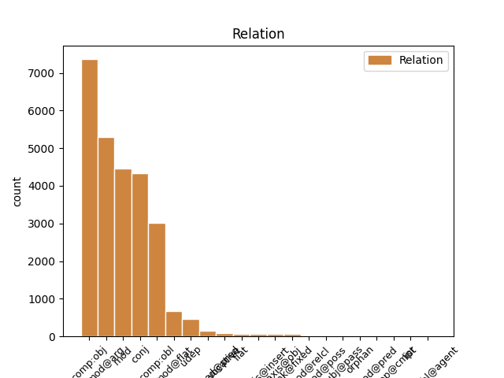
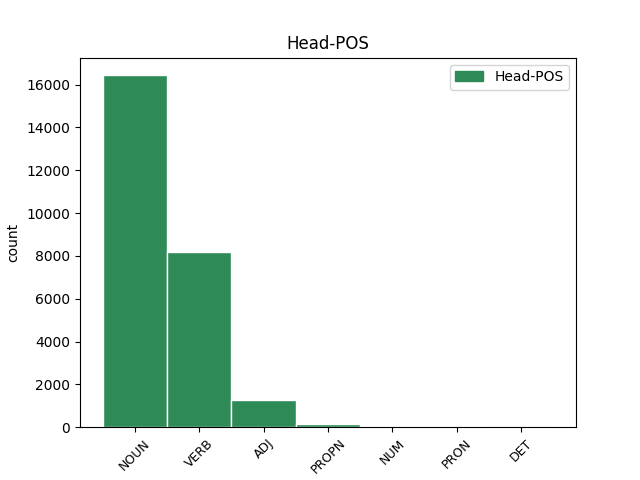
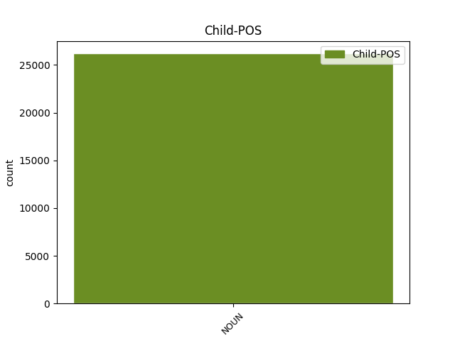

Distribution of features within this leaf



Agreement Rules sorted by frequency.
- When the dependent token is the conjunct(conj) of the head token, and the head token is NOUN and the dependent token is NOUN.
1 Takie _ _ _ _ 0 _ _ _
2 połączenie _ _ _ _ 0 _ _ _
3 leków _ _ _ _ 0 _ _ _
4 może _ _ _ _ 0 _ _ _
5 powodować _ _ _ _ 0 _ _ _
6 wzrost wzrost NOUN subst:sg:acc:m3 Animacy=Inan|Case=Acc|Gender=Masc|Number=Sing 0 _ _ _
7 stężenia _ _ _ _ 0 _ _ _
8 karbamazepiny _ _ _ _ 0 _ _ _
9 w _ _ _ _ 0 _ _ _
10 osoczu _ _ _ _ 0 _ _ _
11 i _ _ _ _ 0 _ _ _
12 zmniejszenie zmniejszyć NOUN ger:sg:acc:n:perf:aff Aspect=Perf|Case=Acc|Gender=Neut|Number=Sing|Polarity=Pos|VerbForm=Vnoun 6 conj _ _
13 stężenia _ _ _ _ 0 _ _ _
14 lanzoprazolu _ _ _ _ 0 _ _ _
15 . _ _ _ _ 0 _ _ _
1 Wzywam wzywać VERB fin:sg:pri:imperf Aspect=Imp|Mood=Ind|Number=Sing|Person=1|Tense=Pres|VerbForm=Fin|Voice=Act 0 _ _ _
2 Komisję komisja NOUN subst:sg:acc:f Case=Acc|Gender=Fem|Number=Sing 1 comp:obj _ _
3 do _ _ _ _ 0 _ _ _
4 rozważenia _ _ _ _ 0 _ _ _
5 potrzeby _ _ _ _ 0 _ _ _
6 poważnych _ _ _ _ 0 _ _ _
7 działań _ _ _ _ 0 _ _ _
8 ukierunkowanych _ _ _ _ 0 _ _ _
9 na _ _ _ _ 0 _ _ _
10 te _ _ _ _ 0 _ _ _
11 zagadnienia _ _ _ _ 0 _ _ _
12 w _ _ _ _ 0 _ _ _
13 końcowym _ _ _ _ 0 _ _ _
14 stadium _ _ _ _ 0 _ _ _
15 negocjacji _ _ _ _ 0 _ _ _
16 . _ _ _ _ 0 _ _ _
1 Wszyscy _ _ _ _ 0 _ _ _
2 podzielamy _ _ _ _ 0 _ _ _
3 tę _ _ _ _ 0 _ _ _
4 samą _ _ _ _ 0 _ _ _
5 ideę _ _ _ _ 0 _ _ _
6 : _ _ _ _ 0 _ _ _
7 mamy _ _ _ _ 0 _ _ _
8 swobodę swoboda NOUN subst:sg:acc:f Case=Acc|Gender=Fem|Number=Sing 0 _ _ _
9 przepływu przepływ NOUN subst:sg:gen:m3 Animacy=Inan|Case=Gen|Gender=Masc|Number=Sing 8 mod@arg _ _
10 orzeczeń _ _ _ _ 0 _ _ _
11 sądowych _ _ _ _ 0 _ _ _
12 . _ _ _ _ 0 _ _ _
1 Niniejsza _ _ _ _ 0 _ _ _
2 Umowa _ _ _ _ 0 _ _ _
3 wchodzi _ _ _ _ 0 _ _ _
4 w _ _ _ _ 0 _ _ _
5 życie _ _ _ _ 0 _ _ _
6 pierwszego _ _ _ _ 0 _ _ _
7 dnia dzień NOUN subst:sg:gen:m3 Animacy=Inan|Case=Gen|Gender=Masc|Number=Sing 0 _ _ _
8 miesiąca miesiąc NOUN subst:sg:gen:m3 Animacy=Inan|Case=Gen|Gender=Masc|Number=Sing 7 mod _ _
9 następującego _ _ _ _ 0 _ _ _
10 po _ _ _ _ 0 _ _ _
11 dniu _ _ _ _ 0 _ _ _
12 , _ _ _ _ 0 _ _ _
13 w _ _ _ _ 0 _ _ _
14 którym _ _ _ _ 0 _ _ _
15 Umawiające _ _ _ _ 0 _ _ _
16 się _ _ _ _ 0 _ _ _
17 Strony _ _ _ _ 0 _ _ _
18 notyfikują _ _ _ _ 0 _ _ _
19 wzajemnie _ _ _ _ 0 _ _ _
20 o _ _ _ _ 0 _ _ _
21 zakończeniu _ _ _ _ 0 _ _ _
22 procedur _ _ _ _ 0 _ _ _
23 niezbędnych _ _ _ _ 0 _ _ _
24 do _ _ _ _ 0 _ _ _
25 tego _ _ _ _ 0 _ _ _
26 celu _ _ _ _ 0 _ _ _
27 . _ _ _ _ 0 _ _ _
1 Nigdy _ _ _ _ 0 _ _ _
2 nie _ _ _ _ 0 _ _ _
3 stracił stracić VERB praet:sg:m1:perf Animacy=Hum|Aspect=Perf|Gender=Masc|Mood=Ind|Number=Sing|Tense=Past|VerbForm=Fin|Voice=Act 0 _ _ _
4 em _ _ _ _ 0 _ _ _
5 z _ _ _ _ 0 _ _ _
6 oczu _ _ _ _ 0 _ _ _
7 mojego _ _ _ _ 0 _ _ _
8 brata brat NOUN subst:sg:gen:m1 Animacy=Hum|Case=Gen|Gender=Masc|Number=Sing 3 comp:obl _ SpaceAfter=No
9 . _ _ _ _ 0 _ _ _
1 Wzywam _ _ _ _ 0 _ _ _
2 Komisję _ _ _ _ 0 _ _ _
3 do _ _ _ _ 0 _ _ _
4 rozważenia rozważyć NOUN ger:sg:gen:n:perf:aff Aspect=Perf|Case=Gen|Gender=Neut|Number=Sing|Polarity=Pos|VerbForm=Vnoun 0 _ _ _
5 potrzeby potrzeba NOUN subst:sg:gen:f Case=Gen|Gender=Fem|Number=Sing 4 comp:obj _ _
6 poważnych _ _ _ _ 0 _ _ _
7 działań _ _ _ _ 0 _ _ _
8 ukierunkowanych _ _ _ _ 0 _ _ _
9 na _ _ _ _ 0 _ _ _
10 te _ _ _ _ 0 _ _ _
11 zagadnienia _ _ _ _ 0 _ _ _
12 w _ _ _ _ 0 _ _ _
13 końcowym _ _ _ _ 0 _ _ _
14 stadium _ _ _ _ 0 _ _ _
15 negocjacji _ _ _ _ 0 _ _ _
16 . _ _ _ _ 0 _ _ _
1 Frank _ _ _ _ 0 _ _ _
2 wyszedł _ _ _ _ 0 _ _ _
3 z _ _ _ _ 0 _ _ _
4 namiotu _ _ _ _ 0 _ _ _
5 z _ _ _ _ 0 _ _ _
6 okiem _ _ _ _ 0 _ _ _
7 zalepionym zalepić ADJ ppas:sg:inst:n:perf:aff Aspect=Perf|Case=Ins|Gender=Neut|Number=Sing|Polarity=Pos|VerbForm=Part|Voice=Pass 0 _ _ _
8 plastrem plaster NOUN subst:sg:inst:m3 Animacy=Inan|Case=Ins|Gender=Masc|Number=Sing 7 comp:obl _ SpaceAfter=No
9 , _ _ _ _ 0 _ _ _
10 przykładając _ _ _ _ 0 _ _ _
11 chusteczkę _ _ _ _ 0 _ _ _
12 do _ _ _ _ 0 _ _ _
13 skaleczonej _ _ _ _ 0 _ _ _
14 wargi _ _ _ _ 0 _ _ _
15 . _ _ _ _ 0 _ _ _
1 odnawiająca _ _ _ _ 0 _ _ _
2 kadencję _ _ _ _ 0 _ _ _
3 Zarządu _ _ _ _ 0 _ _ _
4 Europejskiego _ _ _ _ 0 _ _ _
5 Centrum _ _ _ _ 0 _ _ _
6 Rozwoju rozwój NOUN subst:sg:gen:m3 Animacy=Inan|Case=Gen|Gender=Masc|Number=Sing 0 _ _ _
7 Kształcenia kształcenie NOUN subst:sg:gen:n:ncol Case=Gen|Gender=Neut|Number=Sing 6 mod@flat _ _
8 Zawodowego _ _ _ _ 0 _ _ _
1 Niniejsza _ _ _ _ 0 _ _ _
2 Umowa _ _ _ _ 0 _ _ _
3 wchodzi wchodzić VERB fin:sg:ter:imperf Aspect=Imp|Mood=Ind|Number=Sing|Person=3|Tense=Pres|VerbForm=Fin|Voice=Act 0 _ _ _
4 w _ _ _ _ 0 _ _ _
5 życie _ _ _ _ 0 _ _ _
6 pierwszego _ _ _ _ 0 _ _ _
7 dnia dzień NOUN subst:sg:gen:m3 Animacy=Inan|Case=Gen|Gender=Masc|Number=Sing 3 udep _ _
8 miesiąca _ _ _ _ 0 _ _ _
9 następującego _ _ _ _ 0 _ _ _
10 po _ _ _ _ 0 _ _ _
11 dniu _ _ _ _ 0 _ _ _
12 , _ _ _ _ 0 _ _ _
13 w _ _ _ _ 0 _ _ _
14 którym _ _ _ _ 0 _ _ _
15 Umawiające _ _ _ _ 0 _ _ _
16 się _ _ _ _ 0 _ _ _
17 Strony _ _ _ _ 0 _ _ _
18 notyfikują _ _ _ _ 0 _ _ _
19 wzajemnie _ _ _ _ 0 _ _ _
20 o _ _ _ _ 0 _ _ _
21 zakończeniu _ _ _ _ 0 _ _ _
22 procedur _ _ _ _ 0 _ _ _
23 niezbędnych _ _ _ _ 0 _ _ _
24 do _ _ _ _ 0 _ _ _
25 tego _ _ _ _ 0 _ _ _
26 celu _ _ _ _ 0 _ _ _
27 . _ _ _ _ 0 _ _ _
1 Głosowanie _ _ _ _ 0 _ _ _
2 odbędzie _ _ _ _ 0 _ _ _
3 się _ _ _ _ 0 _ _ _
4 w _ _ _ _ 0 _ _ _
5 piątek _ _ _ _ 0 _ _ _
6 24 24 ADJ adj:sg:gen:m3:pos Animacy=Inan|Case=Gen|Degree=Pos|Gender=Masc|Number=Sing|NumForm=Digit|NumType=Ord 0 _ _ _
7 kwietnia kwiecień NOUN subst:sg:gen:m3 Animacy=Inan|Case=Gen|Gender=Masc|Number=Sing 6 mod@flat _ _
8 2009 _ _ _ _ 0 _ _ _
9 r _ _ _ _ 0 _ _ _
10 . _ _ _ _ 0 _ _ _
1 zmieniającej zmieniać ADJ pact:sg:gen:f:imperf:aff Aspect=Imp|Case=Gen|Gender=Fem|Number=Sing|Polarity=Pos|VerbForm=Part|Voice=Act 0 _ _ _
2 dyrektywę dyrektywa NOUN subst:sg:acc:f Case=Acc|Gender=Fem|Number=Sing 1 comp:obj _ _
3 2003/88/WE _ _ _ _ 0 _ _ _
4 dotyczącą _ _ _ _ 0 _ _ _
5 niektórych _ _ _ _ 0 _ _ _
6 aspektów _ _ _ _ 0 _ _ _
7 organizacji _ _ _ _ 0 _ _ _
8 czasu _ _ _ _ 0 _ _ _
9 pracy _ _ _ _ 0 _ _ _
1 Mój _ _ _ _ 0 _ _ _
2 rozmówca _ _ _ _ 0 _ _ _
3 okazał okazać VERB praet:sg:m1:perf Animacy=Hum|Aspect=Perf|Gender=Masc|Mood=Ind|Number=Sing|Tense=Past|VerbForm=Fin|Voice=Act 0 _ _ _
4 się _ _ _ _ 0 _ _ _
5 sympatycznym _ _ _ _ 0 _ _ _
6 maluchem maluch NOUN subst:sg:inst:m1 Animacy=Hum|Case=Ins|Gender=Masc|Number=Sing 3 comp:pred@pred _ SpaceAfter=No
7 , _ _ _ _ 0 _ _ _
8 a _ _ _ _ 0 _ _ _
9 pozostali _ _ _ _ 0 _ _ _
10 wydawali _ _ _ _ 0 _ _ _
11 się _ _ _ _ 0 _ _ _
12 teraz _ _ _ _ 0 _ _ _
13 zupełnie _ _ _ _ 0 _ _ _
14 niegroźni _ _ _ _ 0 _ _ _
15 , _ _ _ _ 0 _ _ _
16 roztańczeni _ _ _ _ 0 _ _ _
17 i _ _ _ _ 0 _ _ _
18 weseli _ _ _ _ 0 _ _ _
19 . _ _ _ _ 0 _ _ _
1 W _ _ _ _ 0 _ _ _
2 uzasadnieniu _ _ _ _ 0 _ _ _
3 swojego _ _ _ _ 0 _ _ _
4 wniosku _ _ _ _ 0 _ _ _
5 o _ _ _ _ 0 _ _ _
6 udzielenie _ _ _ _ 0 _ _ _
7 azylu _ _ _ _ 0 _ _ _
8 podał _ _ _ _ 0 _ _ _
9 , _ _ _ _ 0 _ _ _
10 że _ _ _ _ 0 _ _ _
11 na _ _ _ _ 0 _ _ _
12 skutek _ _ _ _ 0 _ _ _
13 rozpaczy _ _ _ _ 0 _ _ _
14 z _ _ _ _ 0 _ _ _
15 powodu _ _ _ _ 0 _ _ _
16 pozbawienia pozbawić NOUN ger:sg:gen:n:perf:aff Aspect=Perf|Case=Gen|Gender=Neut|Number=Sing|Polarity=Pos|VerbForm=Vnoun 0 _ _ _
17 wolności wolność NOUN subst:sg:gen:f Case=Gen|Gender=Fem|Number=Sing 16 comp:obl _ _
18 swojego _ _ _ _ 0 _ _ _
19 brata _ _ _ _ 0 _ _ _
20 zasztyletował _ _ _ _ 0 _ _ _
21 członka _ _ _ _ 0 _ _ _
22 partii _ _ _ _ 0 _ _ _
23 Baath _ _ _ _ 0 _ _ _
24 . _ _ _ _ 0 _ _ _
1 PRAGNĄC _ _ _ _ 0 _ _ _
2 uzupełnić _ _ _ _ 0 _ _ _
3 postanowienia _ _ _ _ 0 _ _ _
4 zawarte _ _ _ _ 0 _ _ _
5 w _ _ _ _ 0 _ _ _
6 Porozumieniu _ _ _ _ 0 _ _ _
7 EOG _ _ _ _ 0 _ _ _
8 umową _ _ _ _ 0 _ _ _
9 dwustronną _ _ _ _ 0 _ _ _
10 dotyczącą _ _ _ _ 0 _ _ _
11 nawigacji _ _ _ _ 0 _ _ _
12 satelitarnej _ _ _ _ 0 _ _ _
13 w _ _ _ _ 0 _ _ _
14 sprawach _ _ _ _ 0 _ _ _
15 mających _ _ _ _ 0 _ _ _
16 szczególne _ _ _ _ 0 _ _ _
17 znaczenie _ _ _ _ 0 _ _ _
18 dla _ _ _ _ 0 _ _ _
19 Norwegii Norwegia PROPN subst:sg:gen:f Case=Gen|Gender=Fem|Number=Sing 0 _ _ _
20 , _ _ _ _ 0 _ _ _
21 Wspólnoty wspólnota NOUN subst:sg:gen:f Case=Gen|Gender=Fem|Number=Sing 19 conj _ _
22 i _ _ _ _ 0 _ _ _
23 jej _ _ _ _ 0 _ _ _
24 państw _ _ _ _ 0 _ _ _
25 członkowskich _ _ _ _ 0 _ _ _
26 , _ _ _ _ 0 _ _ _
1 Panie pan NOUN subst:sg:voc:m1 Animacy=Hum|Case=Voc|Gender=Masc|Number=Sing 25 vocative _ _
2 przewodniczący _ _ _ _ 0 _ _ _
3 , _ _ _ _ 0 _ _ _
4 wraz _ _ _ _ 0 _ _ _
5 ze _ _ _ _ 0 _ _ _
6 wstąpieniem _ _ _ _ 0 _ _ _
7 dziewięciu _ _ _ _ 0 _ _ _
8 nowych _ _ _ _ 0 _ _ _
9 państw _ _ _ _ 0 _ _ _
10 członkowskich _ _ _ _ 0 _ _ _
11 do _ _ _ _ 0 _ _ _
12 strefy _ _ _ _ 0 _ _ _
13 Schengen _ _ _ _ 0 _ _ _
14 , _ _ _ _ 0 _ _ _
15 co _ _ _ _ 0 _ _ _
16 jest _ _ _ _ 0 _ _ _
17 prawdziwym _ _ _ _ 0 _ _ _
18 i _ _ _ _ 0 _ _ _
19 ostatecznym _ _ _ _ 0 _ _ _
20 zniesieniem _ _ _ _ 0 _ _ _
21 żelaznej _ _ _ _ 0 _ _ _
22 kurtyny _ _ _ _ 0 _ _ _
23 , _ _ _ _ 0 _ _ _
24 UE _ _ _ _ 0 _ _ _
25 daje dawać VERB fin:sg:ter:imperf Aspect=Imp|Mood=Ind|Number=Sing|Person=3|Tense=Pres|VerbForm=Fin|Voice=Act 0 _ _ _
26 swoim _ _ _ _ 0 _ _ _
27 obywatelom _ _ _ _ 0 _ _ _
28 możliwość _ _ _ _ 0 _ _ _
29 podróżowania _ _ _ _ 0 _ _ _
30 i _ _ _ _ 0 _ _ _
31 bratania _ _ _ _ 0 _ _ _
32 się _ _ _ _ 0 _ _ _
33 z _ _ _ _ 0 _ _ _
34 sąsiadami _ _ _ _ 0 _ _ _
35 . _ _ _ _ 0 _ _ _
1 Rzeczywiście _ _ _ _ 0 _ _ _
2 , _ _ _ _ 0 _ _ _
3 chińska _ _ _ _ 0 _ _ _
4 zdolność _ _ _ _ 0 _ _ _
5 produkcyjna _ _ _ _ 0 _ _ _
6 wzrosła _ _ _ _ 0 _ _ _
7 z _ _ _ _ 0 _ _ _
8 1,9 _ _ _ _ 0 _ _ _
9 miliona _ _ _ _ 0 _ _ _
10 ton _ _ _ _ 0 _ _ _
11 w _ _ _ _ 0 _ _ _
12 1993 _ _ _ _ 0 _ _ _
13 r _ _ _ _ 0 _ _ _
14 . _ _ _ _ 0 _ _ _
15 do _ _ _ _ 0 _ _ _
16 2,4 2,4 NUM num:sg:gen:m3:rec Animacy=Inan|Case=Gen|Gender=Masc|Number=Sing|NumForm=Digit|NumType=Card 0 _ _ _
17 miliona milion NOUN subst:sg:gen:m3 Animacy=Inan|Case=Gen|Gender=Masc|Number=Sing 16 flat _ _
18 ton _ _ _ _ 0 _ _ _
19 w _ _ _ _ 0 _ _ _
20 1998 _ _ _ _ 0 _ _ _
21 r _ _ _ _ 0 _ _ _
22 . _ _ _ _ 0 _ _ _
1 uwzględniając _ _ _ _ 0 _ _ _
2 Traktat _ _ _ _ 0 _ _ _
3 dotyczący _ _ _ _ 0 _ _ _
4 przyłączenia _ _ _ _ 0 _ _ _
5 Republiki _ _ _ _ 0 _ _ _
6 Grecji _ _ _ _ 0 _ _ _
7 do _ _ _ _ 0 _ _ _
8 Wspólnoty _ _ _ _ 0 _ _ _
9 Europejskiej _ _ _ _ 0 _ _ _
10 oraz _ _ _ _ 0 _ _ _
11 do _ _ _ _ 0 _ _ _
12 Europejskiej _ _ _ _ 0 _ _ _
13 Wspólnoty _ _ _ _ 0 _ _ _
14 Energii _ _ _ _ 0 _ _ _
15 Atomowej _ _ _ _ 0 _ _ _
16 [ _ _ _ _ 0 _ _ _
17 1 _ _ _ _ 0 _ _ _
18 ] _ _ _ _ 0 _ _ _
19 , _ _ _ _ 0 _ _ _
20 podpisany podpisać ADJ ppas:sg:acc:m3:perf:aff Animacy=Inan|Aspect=Perf|Case=Acc|Gender=Masc|Number=Sing|Polarity=Pos|VerbForm=Part|Voice=Pass 0 _ _ _
21 dnia dzień NOUN subst:sg:gen:m3 Animacy=Inan|Case=Gen|Gender=Masc|Number=Sing 20 udep _ _
22 28 _ _ _ _ 0 _ _ _
23 maja _ _ _ _ 0 _ _ _
24 1979 _ _ _ _ 0 _ _ _
25 r _ _ _ _ 0 _ _ _
26 . _ _ _ _ 0 _ _ _
27 , _ _ _ _ 0 _ _ _
28 w _ _ _ _ 0 _ _ _
29 szczególności _ _ _ _ 0 _ _ _
30 jego _ _ _ _ 0 _ _ _
31 art _ _ _ _ 0 _ _ _
32 . _ _ _ _ 0 _ _ _
33 146 _ _ _ _ 0 _ _ _
34 dołączonego _ _ _ _ 0 _ _ _
35 do _ _ _ _ 0 _ _ _
36 niego _ _ _ _ 0 _ _ _
37 Aktu _ _ _ _ 0 _ _ _
38 , _ _ _ _ 0 _ _ _
1 Odzywały odzywać VERB praet:pl:m3:imperf Animacy=Inan|Aspect=Imp|Gender=Masc|Mood=Ind|Number=Plur|Tense=Past|VerbForm=Fin|Voice=Act 0 _ _ _
2 się _ _ _ _ 0 _ _ _
3 w _ _ _ _ 0 _ _ _
4 oddali _ _ _ _ 0 _ _ _
5 , _ _ _ _ 0 _ _ _
6 wiele _ _ _ _ 0 _ _ _
7 małych _ _ _ _ 0 _ _ _
8 dzwoneczków dzwoneczek NOUN subst:pl:gen:m3 Animacy=Inan|Case=Gen|Gender=Masc|Number=Plur 1 conj _ SpaceAfter=No
9 , _ _ _ _ 0 _ _ _
10 nie _ _ _ _ 0 _ _ _
11 dzwonów _ _ _ _ 0 _ _ _
12 kościelnych _ _ _ _ 0 _ _ _
13 , _ _ _ _ 0 _ _ _
14 ale _ _ _ _ 0 _ _ _
15 dzwonków _ _ _ _ 0 _ _ _
16 zaczarowanych _ _ _ _ 0 _ _ _
17 . _ _ _ _ 0 _ _ _
1 Rezultaty _ _ _ _ 0 _ _ _
2 UGW _ _ _ _ 0 _ _ _
3 powinny _ _ _ _ 0 _ _ _
4 być _ _ _ _ 0 _ _ _
5 oceniane _ _ _ _ 0 _ _ _
6 również _ _ _ _ 0 _ _ _
7 z _ _ _ _ 0 _ _ _
8 punktu punkt NOUN subst:sg:gen:m3 Animacy=Inan|Case=Gen|Gender=Masc|Number=Sing 0 _ _ _
9 widzenia widzenie NOUN subst:sg:gen:n:ncol Case=Gen|Gender=Neut|Number=Sing 8 unk@fixed _ _
10 polityki _ _ _ _ 0 _ _ _
11 wspólnych _ _ _ _ 0 _ _ _
12 stóp _ _ _ _ 0 _ _ _
13 procentowych _ _ _ _ 0 _ _ _
14 , _ _ _ _ 0 _ _ _
15 które _ _ _ _ 0 _ _ _
16 w _ _ _ _ 0 _ _ _
17 wielu _ _ _ _ 0 _ _ _
18 krajach _ _ _ _ 0 _ _ _
19 skutkowały _ _ _ _ 0 _ _ _
20 wzrostem _ _ _ _ 0 _ _ _
21 cen _ _ _ _ 0 _ _ _
22 na _ _ _ _ 0 _ _ _
23 rynku _ _ _ _ 0 _ _ _
24 nieruchomości _ _ _ _ 0 _ _ _
1 Wypadli _ _ _ _ 0 _ _ _
2 nieźle _ _ _ _ 0 _ _ _
3 na _ _ _ _ 0 _ _ _
4 tle _ _ _ _ 0 _ _ _
5 orkiestry _ _ _ _ 0 _ _ _
6 gminnej _ _ _ _ 0 _ _ _
7 i _ _ _ _ 0 _ _ _
8 nawet _ _ _ _ 0 _ _ _
9 Terzi _ _ _ _ 0 _ _ _
10 oraz _ _ _ _ 0 _ _ _
11 inni _ _ _ _ 0 _ _ _
12 dowódcy _ _ _ _ 0 _ _ _
13 partyzanccy _ _ _ _ 0 _ _ _
14 to _ _ _ _ 0 _ _ _
15 potwierdzili potwierdzić VERB praet:pl:m1:perf Animacy=Hum|Aspect=Perf|Gender=Masc|Mood=Ind|Number=Plur|Tense=Past|VerbForm=Fin|Voice=Act 0 _ _ _
16 : _ _ _ _ 0 _ _ _
17 dzielni _ _ _ _ 0 _ _ _
18 chłopcy chłopiec NOUN subst:pl:nom:m1 Animacy=Hum|Case=Nom|Gender=Masc|Number=Plur 15 parataxis@obj _ SpaceAfter=No
19 , _ _ _ _ 0 _ _ _
20 spisali _ _ _ _ 0 _ _ _
21 się _ _ _ _ 0 _ _ _
22 doskonale _ _ _ _ 0 _ _ _
23 . _ _ _ _ 0 _ _ _
1 Moim _ _ _ _ 0 _ _ _
2 zdaniem zdanie NOUN subst:sg:inst:n:ncol Case=Ins|Gender=Neut|Number=Sing 4 parataxis@insert _ _
3 UMŚ _ _ _ _ 0 _ _ _
4 stanowi stanowić VERB fin:sg:ter:imperf Aspect=Imp|Mood=Ind|Number=Sing|Person=3|Tense=Pres|VerbForm=Fin|Voice=Act 0 _ _ _
5 świetny _ _ _ _ 0 _ _ _
6 instrument _ _ _ _ 0 _ _ _
7 pozwalający _ _ _ _ 0 _ _ _
8 na _ _ _ _ 0 _ _ _
9 zdecydowaną _ _ _ _ 0 _ _ _
10 interwencję _ _ _ _ 0 _ _ _
11 w _ _ _ _ 0 _ _ _
12 przypadku _ _ _ _ 0 _ _ _
13 konfliktów _ _ _ _ 0 _ _ _
14 występujących _ _ _ _ 0 _ _ _
15 w _ _ _ _ 0 _ _ _
16 tym _ _ _ _ 0 _ _ _
17 obszarze _ _ _ _ 0 _ _ _
18 , _ _ _ _ 0 _ _ _
19 a _ _ _ _ 0 _ _ _
20 nawet _ _ _ _ 0 _ _ _
21 zapewniający _ _ _ _ 0 _ _ _
22 rozwiązania _ _ _ _ 0 _ _ _
23 tych _ _ _ _ 0 _ _ _
24 konfliktów _ _ _ _ 0 _ _ _
25 . _ _ _ _ 0 _ _ _
1 Nazwa _ _ _ _ 0 _ _ _
2 środka _ _ _ _ 0 _ _ _
3 pomocy _ _ _ _ 0 _ _ _
4 Razvojne _ _ _ _ 0 _ _ _
5 podpore _ _ _ _ 0 _ _ _
6 Pomurski Pomurski PROPN subst:sg:nom:n:ncol Case=Nom|Gender=Neut|Number=Sing 0 _ _ _
7 regiji regiji NOUN subst:sg:nom:n:ncol Case=Nom|Gender=Neut|Number=Sing 6 mod@flat _ _
8 – _ _ _ _ 0 _ _ _
9 regionalni _ _ _ _ 0 _ _ _
10 cilji _ _ _ _ 0 _ _ _
1 Dnia _ _ _ _ 0 _ _ _
2 26 _ _ _ _ 0 _ _ _
3 listopada _ _ _ _ 0 _ _ _
4 w _ _ _ _ 0 _ _ _
5 Lyonie _ _ _ _ 0 _ _ _
6 , _ _ _ _ 0 _ _ _
7 Francja _ _ _ _ 0 _ _ _
8 , _ _ _ _ 0 _ _ _
9 sieć _ _ _ _ 0 _ _ _
10 Ideal-ist _ _ _ _ 0 _ _ _
11 organizuje _ _ _ _ 0 _ _ _
12 sesję _ _ _ _ 0 _ _ _
13 kontaktową _ _ _ _ 0 _ _ _
14 , _ _ _ _ 0 _ _ _
15 w _ _ _ _ 0 _ _ _
16 ramach _ _ _ _ 0 _ _ _
17 konferencji _ _ _ _ 0 _ _ _
18 TIK TIK PROPN subst:sg:nom:m3 Animacy=Inan|Case=Nom|Gender=Masc|Number=Sing 0 _ _ _
19 ( _ _ _ _ 0 _ _ _
20 technologia technologia NOUN subst:sg:nom:f Case=Nom|Gender=Fem|Number=Sing 18 mod _ _
21 informacyjna _ _ _ _ 0 _ _ _
22 i _ _ _ _ 0 _ _ _
23 komunikacyjna _ _ _ _ 0 _ _ _
24 ) _ _ _ _ 0 _ _ _
25 2008 _ _ _ _ 0 _ _ _
26 . _ _ _ _ 0 _ _ _
1 Ta _ _ _ _ 0 _ _ _
2 technologia _ _ _ _ 0 _ _ _
3 budżetowa _ _ _ _ 0 _ _ _
4 jest _ _ _ _ 0 _ _ _
5 zaprezentowana _ _ _ _ 0 _ _ _
6 jako _ _ _ _ 0 _ _ _
7 nowość _ _ _ _ 0 _ _ _
8 , _ _ _ _ 0 _ _ _
9 będąca być ADJ pact:sg:nom:f:imperf:aff Aspect=Imp|Case=Nom|Gender=Fem|Number=Sing|Polarity=Pos|VerbForm=Part|Voice=Act 0 _ _ _
10 strażą straż NOUN subst:sg:inst:f Case=Ins|Gender=Fem|Number=Sing 9 comp:pred@pred _ _
11 przednią _ _ _ _ 0 _ _ _
12 inteligencji _ _ _ _ 0 _ _ _
13 budżetowej _ _ _ _ 0 _ _ _
14 , _ _ _ _ 0 _ _ _
15 ale _ _ _ _ 0 _ _ _
16 jest _ _ _ _ 0 _ _ _
17 obecnie _ _ _ _ 0 _ _ _
18 czymś _ _ _ _ 0 _ _ _
19 dość _ _ _ _ 0 _ _ _
20 starym _ _ _ _ 0 _ _ _
21 , _ _ _ _ 0 _ _ _
22 niczym _ _ _ _ 0 _ _ _
23 z _ _ _ _ 0 _ _ _
24 roku _ _ _ _ 0 _ _ _
25 1947 _ _ _ _ 0 _ _ _
26 . _ _ _ _ 0 _ _ _
1 Zastosowanie _ _ _ _ 0 _ _ _
2 metody metoda NOUN subst:sg:gen:f Case=Gen|Gender=Fem|Number=Sing 0 _ _ _
3 obliczeniowej _ _ _ _ 0 _ _ _
4 , _ _ _ _ 0 _ _ _
5 o _ _ _ _ 0 _ _ _
6 której _ _ _ _ 0 _ _ _
7 mowa mowa NOUN subst:sg:nom:f Case=Nom|Gender=Fem|Number=Sing 2 mod@relcl _ _
8 w _ _ _ _ 0 _ _ _
9 motywie _ _ _ _ 0 _ _ _
10 5 _ _ _ _ 0 _ _ _
11 , _ _ _ _ 0 _ _ _
12 nie _ _ _ _ 0 _ _ _
13 ma _ _ _ _ 0 _ _ _
14 wpływu _ _ _ _ 0 _ _ _
15 na _ _ _ _ 0 _ _ _
16 kwotę _ _ _ _ 0 _ _ _
17 opłaty _ _ _ _ 0 _ _ _
18 podstawowej _ _ _ _ 0 _ _ _
19 i _ _ _ _ 0 _ _ _
20 opłaty _ _ _ _ 0 _ _ _
21 B _ _ _ _ 0 _ _ _
22 w _ _ _ _ 0 _ _ _
23 odniesieniu _ _ _ _ 0 _ _ _
24 do _ _ _ _ 0 _ _ _
25 wymienionego _ _ _ _ 0 _ _ _
26 roku _ _ _ _ 0 _ _ _
27 gospodarczego _ _ _ _ 0 _ _ _
28 . _ _ _ _ 0 _ _ _
1 Ale _ _ _ _ 0 _ _ _
2 byli _ _ _ _ 0 _ _ _
3 śmy _ _ _ _ 0 _ _ _
4 tylko _ _ _ _ 0 _ _ _
5 Luke _ _ _ _ 0 _ _ _
6 , _ _ _ _ 0 _ _ _
7 ja ja PRON ppron12:sg:nom:f:pri Case=Nom|Gender=Fem|Number=Sing|Person=1|PronType=Prs 0 _ _ _
8 i _ _ _ _ 0 _ _ _
9 ta _ _ _ _ 0 _ _ _
10 kobieta kobieta NOUN subst:sg:nom:f Case=Nom|Gender=Fem|Number=Sing 7 conj _ SpaceAfter=No
11 , _ _ _ _ 0 _ _ _
12 która _ _ _ _ 0 _ _ _
13 zatrzymała _ _ _ _ 0 _ _ _
14 się _ _ _ _ 0 _ _ _
15 w _ _ _ _ 0 _ _ _
16 pewnej _ _ _ _ 0 _ _ _
17 odległości _ _ _ _ 0 _ _ _
18 i _ _ _ _ 0 _ _ _
19 obserwowała _ _ _ _ 0 _ _ _
20 nas _ _ _ _ 0 _ _ _
21 , _ _ _ _ 0 _ _ _
22 jakby _ _ _ _ 0 _ _ _
23 bała _ _ _ _ 0 _ _ _
24 się _ _ _ _ 0 _ _ _
25 zbliżyć _ _ _ _ 0 _ _ _
26 w _ _ _ _ 0 _ _ _
27 drodze _ _ _ _ 0 _ _ _
28 do _ _ _ _ 0 _ _ _
29 wyjścia _ _ _ _ 0 _ _ _
30 . _ _ _ _ 0 _ _ _
1 Ubiegający ubiegać ADJ pact:sg:nom:m1:imperf:aff Animacy=Hum|Aspect=Imp|Case=Nom|Gender=Masc|Number=Sing|Polarity=Pos|VerbForm=Part|Voice=Act 0 _ _ _
2 się _ _ _ _ 0 _ _ _
3 o _ _ _ _ 0 _ _ _
4 skup _ _ _ _ 0 _ _ _
5 lub _ _ _ _ 0 _ _ _
6 jego _ _ _ _ 0 _ _ _
7 przedstawiciel przedstawiciel NOUN subst:sg:nom:m1 Animacy=Hum|Case=Nom|Gender=Masc|Number=Sing 1 conj _ _
8 może _ _ _ _ 0 _ _ _
9 być _ _ _ _ 0 _ _ _
10 obecny _ _ _ _ 0 _ _ _
11 podczas _ _ _ _ 0 _ _ _
12 sporządzania _ _ _ _ 0 _ _ _
13 protokołu _ _ _ _ 0 _ _ _
14 . _ _ _ _ 0 _ _ _
1 - _ _ _ _ 0 _ _ _
2 zajęcia zajęcie NOUN subst:pl:nom:n:ncol Case=Nom|Gender=Neut|Number=Plur 0 _ _ _
3 kulturalne _ _ _ _ 0 _ _ _
4 ( _ _ _ _ 0 _ _ _
5 opłaty opłata NOUN subst:pl:nom:f Case=Nom|Gender=Fem|Number=Plur 2 parataxis@insert _ _
6 za _ _ _ _ 0 _ _ _
7 wstęp _ _ _ _ 0 _ _ _
8 , _ _ _ _ 0 _ _ _
9 łącznie _ _ _ _ 0 _ _ _
10 z _ _ _ _ 0 _ _ _
11 biletami _ _ _ _ 0 _ _ _
12 zakupionymi _ _ _ _ 0 _ _ _
13 w _ _ _ _ 0 _ _ _
14 przedsprzedaży _ _ _ _ 0 _ _ _
15 ) _ _ _ _ 0 _ _ _
16 , _ _ _ _ 0 _ _ _
1 Część _ _ _ _ 0 _ _ _
2 obcego _ _ _ _ 0 _ _ _
3 związku _ _ _ _ 0 _ _ _
4 została _ _ _ _ 0 _ _ _
5 wydalona _ _ _ _ 0 _ _ _
6 z _ _ _ _ 0 _ _ _
7 moczem _ _ _ _ 0 _ _ _
8 , _ _ _ _ 0 _ _ _
9 część część NOUN subst:sg:nom:f Case=Nom|Gender=Fem|Number=Sing 10 subj@pass _ _
10 rozłożona rozłożyć ADJ ppas:sg:nom:f:perf:aff Aspect=Perf|Case=Nom|Gender=Fem|Number=Sing|Polarity=Pos|VerbForm=Part|Voice=Pass 0 _ _ _
11 , _ _ _ _ 0 _ _ _
12 ale _ _ _ _ 0 _ _ _
13 - _ _ _ _ 0 _ _ _
14 jak _ _ _ _ 0 _ _ _
15 wykazały _ _ _ _ 0 _ _ _
16 analizy _ _ _ _ 0 _ _ _
17 - _ _ _ _ 0 _ _ _
18 część _ _ _ _ 0 _ _ _
19 wbudowała _ _ _ _ 0 _ _ _
20 się _ _ _ _ 0 _ _ _
21 w _ _ _ _ 0 _ _ _
22 tkanki _ _ _ _ 0 _ _ _
23 człowieka _ _ _ _ 0 _ _ _
24 . _ _ _ _ 0 _ _ _
1 Nazwa nazwa NOUN subst:sg:nom:f Case=Nom|Gender=Fem|Number=Sing 0 _ _ _
2 : _ _ _ _ 0 _ _ _
3 Podział podział NOUN subst:sg:nom:m3 Animacy=Inan|Case=Nom|Gender=Masc|Number=Sing 1 parataxis@obj _ _
4 geograficzny _ _ _ _ 0 _ _ _
5 całkowitej _ _ _ _ 0 _ _ _
6 liczby _ _ _ _ 0 _ _ _
7 oddziałów _ _ _ _ 0 _ _ _
8 w _ _ _ _ 0 _ _ _
9 EOG _ _ _ _ 0 _ _ _
1 Zdaniem zdanie NOUN subst:sg:inst:n:ncol Case=Ins|Gender=Neut|Number=Sing 0 _ _ _
2 strony strona NOUN subst:sg:gen:f Case=Gen|Gender=Fem|Number=Sing 1 mod@poss _ _
3 skarżącej _ _ _ _ 0 _ _ _
4 przedmiotowe _ _ _ _ 0 _ _ _
5 oznaczenie _ _ _ _ 0 _ _ _
6 wyróżniające _ _ _ _ 0 _ _ _
7 się _ _ _ _ 0 _ _ _
8 niezwykłą _ _ _ _ 0 _ _ _
9 strukturą _ _ _ _ 0 _ _ _
10 gramatyczną _ _ _ _ 0 _ _ _
11 i _ _ _ _ 0 _ _ _
12 wieloznacznością _ _ _ _ 0 _ _ _
13 jest _ _ _ _ 0 _ _ _
14 postrzegane _ _ _ _ 0 _ _ _
15 przez _ _ _ _ 0 _ _ _
16 właściwy _ _ _ _ 0 _ _ _
17 krąg _ _ _ _ 0 _ _ _
18 odbiorców _ _ _ _ 0 _ _ _
19 jako _ _ _ _ 0 _ _ _
20 słowo _ _ _ _ 0 _ _ _
21 fantazyjne _ _ _ _ 0 _ _ _
22 . _ _ _ _ 0 _ _ _
1 Palenie _ _ _ _ 0 _ _ _
2 jest _ _ _ _ 0 _ _ _
3 poważnym _ _ _ _ 0 _ _ _
4 problemem _ _ _ _ 0 _ _ _
5 zdrowia _ _ _ _ 0 _ _ _
6 publicznego _ _ _ _ 0 _ _ _
7 , _ _ _ _ 0 _ _ _
8 odpowiedzialnym _ _ _ _ 0 _ _ _
9 za _ _ _ _ 0 _ _ _
10 śmierć _ _ _ _ 0 _ _ _
11 kilkuset kilkaset DET num:pl:gen:m3:congr Animacy=Inan|Case=Gen|Gender=Masc|Number=Plur|NumType=Card|PronType=Ind 0 _ _ _
12 tysięcy tysiąc NOUN subst:pl:gen:m3 Animacy=Inan|Case=Gen|Gender=Masc|Number=Plur 11 unk@fixed _ _
13 osób _ _ _ _ 0 _ _ _
14 rocznie _ _ _ _ 0 _ _ _
15 , _ _ _ _ 0 _ _ _
16 w _ _ _ _ 0 _ _ _
17 tym _ _ _ _ 0 _ _ _
18 niepalących _ _ _ _ 0 _ _ _
19 . _ _ _ _ 0 _ _ _
1 Ma _ _ _ _ 0 _ _ _
2 wiele wiele DET num:pl:acc:m3:rec Animacy=Inan|Case=Acc|Gender=Masc|Number=Plur|NumType=Card|PronType=Ind 0 _ _ _
3 , _ _ _ _ 0 _ _ _
4 bardzo _ _ _ _ 0 _ _ _
5 wiele _ _ _ _ 0 _ _ _
6 lat rok NOUN subst:pl:gen:m3 Animacy=Inan|Case=Gen|Gender=Masc|Number=Plur 2 conj _ SpaceAfter=No
7 , _ _ _ _ 0 _ _ _
8 a _ _ _ _ 0 _ _ _
9 wygląda _ _ _ _ 0 _ _ _
10 na _ _ _ _ 0 _ _ _
11 wiele _ _ _ _ 0 _ _ _
12 , _ _ _ _ 0 _ _ _
13 wiele _ _ _ _ 0 _ _ _
14 mniej _ _ _ _ 0 _ _ _
15 . _ _ _ _ 0 _ _ _
1 Przekonał _ _ _ _ 0 _ _ _
2 em _ _ _ _ 0 _ _ _
3 się _ _ _ _ 0 _ _ _
4 , _ _ _ _ 0 _ _ _
5 że _ _ _ _ 0 _ _ _
6 to to PRON subst:sg:nom:n:ncol Case=Nom|Gender=Neut|Number=Sing|PronType=Dem 0 _ _ _
7 się _ _ _ _ 0 _ _ _
8 nigdy _ _ _ _ 0 _ _ _
9 nie _ _ _ _ 0 _ _ _
10 kończy _ _ _ _ 0 _ _ _
11 , _ _ _ _ 0 _ _ _
12 ten _ _ _ _ 0 _ _ _
13 pot pot NOUN subst:sg:nom:m3 Animacy=Inan|Case=Nom|Gender=Masc|Number=Sing 6 mod _ SpaceAfter=No
14 , _ _ _ _ 0 _ _ _
15 bo _ _ _ _ 0 _ _ _
16 upał _ _ _ _ 0 _ _ _
17 , _ _ _ _ 0 _ _ _
18 który _ _ _ _ 0 _ _ _
19 go _ _ _ _ 0 _ _ _
20 wywołuje _ _ _ _ 0 _ _ _
21 , _ _ _ _ 0 _ _ _
22 jest _ _ _ _ 0 _ _ _
23 wilgotny _ _ _ _ 0 _ _ _
24 . _ _ _ _ 0 _ _ _
1 Bycie być NOUN ger:sg:nom:n:imperf:aff Aspect=Imp|Case=Nom|Gender=Neut|Number=Sing|Polarity=Pos|VerbForm=Vnoun 0 _ _ _
2 youtuberem youtuber NOUN subst:sg:inst:m1 Animacy=Hum|Case=Ins|Gender=Masc|Number=Sing 1 mod@pred _ _
3 to _ _ _ _ 0 _ _ _
4 ciężka _ _ _ _ 0 _ _ _
5 robota _ _ _ _ 0 _ _ _
6 , _ _ _ _ 0 _ _ _
7 tłumaczy _ _ _ _ 0 _ _ _
8 mi _ _ _ _ 0 _ _ _
9 Łukasz _ _ _ _ 0 _ _ _
10 . _ _ _ _ 0 _ _ _
1 - _ _ _ _ 0 _ _ _
2 Dzień dzień NOUN subst:sg:nom:m3 Animacy=Inan|Case=Nom|Gender=Masc|Number=Sing 0 _ _ _
3 dobry _ _ _ _ 0 _ _ _
4 , _ _ _ _ 0 _ _ _
5 babciu babcia NOUN subst:sg:voc:f Case=Voc|Gender=Fem|Number=Sing 2 vocative _ SpaceAfter=No
6 ! _ _ _ _ 0 _ _ _
7 - _ _ _ _ 0 _ _ _
8 rzekł _ _ _ _ 0 _ _ _
9 nagle _ _ _ _ 0 _ _ _
10 wesoło _ _ _ _ 0 _ _ _
11 , _ _ _ _ 0 _ _ _
12 jakby _ _ _ _ 0 _ _ _
13 uważał _ _ _ _ 0 _ _ _
14 sytuację _ _ _ _ 0 _ _ _
15 za _ _ _ _ 0 _ _ _
16 normalną _ _ _ _ 0 _ _ _
17 . _ _ _ _ 0 _ _ _
1 Nawet _ _ _ _ 0 _ _ _
2 przy _ _ _ _ 0 _ _ _
3 najniższych _ _ _ _ 0 _ _ _
4 stawkach _ _ _ _ 0 _ _ _
5 polscy _ _ _ _ 0 _ _ _
6 lekarze _ _ _ _ 0 _ _ _
7 z _ _ _ _ 0 _ _ _
8 Białorusi _ _ _ _ 0 _ _ _
9 mogli _ _ _ _ 0 _ _ _
10 by _ _ _ _ 0 _ _ _
11 zarobić _ _ _ _ 0 _ _ _
12 miesięcznie _ _ _ _ 0 _ _ _
13 trzy _ _ _ _ 0 _ _ _
14 razy raz NOUN subst:pl:acc:m3 Animacy=Inan|Case=Acc|Gender=Masc|Number=Plur 15 mod _ _
15 więcej więcej DET num:pl:acc:m3:rec Animacy=Inan|Case=Acc|Gender=Masc|Number=Plur|NumType=Card|PronType=Ind 0 _ _ _
16 niż _ _ _ _ 0 _ _ _
17 po _ _ _ _ 0 _ _ _
18 wschodniej _ _ _ _ 0 _ _ _
19 stronie _ _ _ _ 0 _ _ _
20 granicy _ _ _ _ 0 _ _ _
21 . _ _ _ _ 0 _ _ _
1 Rzut _ _ _ _ 0 _ _ _
2 oka _ _ _ _ 0 _ _ _
3 na _ _ _ _ 0 _ _ _
4 " _ _ _ _ 0 _ _ _
5 Mawsu'at Mawsu'at PROPN subst:sg:acc:m3 Animacy=Inan|Case=Acc|Gender=Masc|Number=Sing 0 _ _ _
6 al-Jihad al-Jihad NOUN subst:sg:acc:m3 Animacy=Inan|Case=Acc|Gender=Masc|Number=Sing 5 unk@fixed _ _
7 al-Afghani _ _ _ _ 0 _ _ _
8 " _ _ _ _ 0 _ _ _
9 ( _ _ _ _ 0 _ _ _
10 oryginalny _ _ _ _ 0 _ _ _
11 arabski _ _ _ _ 0 _ _ _
12 tytuł _ _ _ _ 0 _ _ _
13 encyklopedii _ _ _ _ 0 _ _ _
14 ) _ _ _ _ 0 _ _ _
15 wystarczył _ _ _ _ 0 _ _ _
16 , _ _ _ _ 0 _ _ _
17 by _ _ _ _ 0 _ _ _
18 m _ _ _ _ 0 _ _ _
19 zrozumiał _ _ _ _ 0 _ _ _
20 , _ _ _ _ 0 _ _ _
21 że _ _ _ _ 0 _ _ _
22 być _ _ _ _ 0 _ _ _
23 może _ _ _ _ 0 _ _ _
24 mam _ _ _ _ 0 _ _ _
25 przed _ _ _ _ 0 _ _ _
26 sobą _ _ _ _ 0 _ _ _
27 klucz _ _ _ _ 0 _ _ _
28 do _ _ _ _ 0 _ _ _
29 poznania _ _ _ _ 0 _ _ _
30 sekretów _ _ _ _ 0 _ _ _
31 organizacji _ _ _ _ 0 _ _ _
32 Osama _ _ _ _ 0 _ _ _
33 bin _ _ _ _ 0 _ _ _
34 Ladena _ _ _ _ 0 _ _ _
35 , _ _ _ _ 0 _ _ _
36 najgroźniejszego _ _ _ _ 0 _ _ _
37 terrorysty _ _ _ _ 0 _ _ _
38 świata _ _ _ _ 0 _ _ _
39 , _ _ _ _ 0 _ _ _
40 odpowiedzialnego _ _ _ _ 0 _ _ _
41 m.in _ _ _ _ 0 _ _ _
42 . _ _ _ _ 0 _ _ _
43 za _ _ _ _ 0 _ _ _
44 wspieranie _ _ _ _ 0 _ _ _
45 mudżahedinów _ _ _ _ 0 _ _ _
46 i _ _ _ _ 0 _ _ _
47 zamachy _ _ _ _ 0 _ _ _
48 bombowe _ _ _ _ 0 _ _ _
49 na _ _ _ _ 0 _ _ _
50 ambasady _ _ _ _ 0 _ _ _
51 amerykańskie _ _ _ _ 0 _ _ _
52 w _ _ _ _ 0 _ _ _
53 Afryce _ _ _ _ 0 _ _ _
54 w _ _ _ _ 0 _ _ _
55 1998 _ _ _ _ 0 _ _ _
56 roku _ _ _ _ 0 _ _ _
57 . _ _ _ _ 0 _ _ _
1 Kiedy _ _ _ _ 0 _ _ _
2 Laomedon _ _ _ _ 0 _ _ _
3 odmówił _ _ _ _ 0 _ _ _
4 należnej _ _ _ _ 0 _ _ _
5 bogom _ _ _ _ 0 _ _ _
6 zapłaty _ _ _ _ 0 _ _ _
7 , _ _ _ _ 0 _ _ _
8 Apollo _ _ _ _ 0 _ _ _
9 zesłał _ _ _ _ 0 _ _ _
10 na _ _ _ _ 0 _ _ _
11 kraj _ _ _ _ 0 _ _ _
12 zarazę _ _ _ _ 0 _ _ _
13 , _ _ _ _ 0 _ _ _
14 a _ _ _ _ 0 _ _ _
15 Posejdon Posejdon PROPN subst:sg:nom:m1 Animacy=Hum|Case=Nom|Gender=Masc|Number=Sing 0 _ _ _
16 morskiego _ _ _ _ 0 _ _ _
17 potwora potwór NOUN subst:sg:acc:m2 Animacy=Nhum|Case=Acc|Gender=Masc|Number=Sing 15 comp:obj _ SpaceAfter=No
18 , _ _ _ _ 0 _ _ _
19 któremu _ _ _ _ 0 _ _ _
20 Trojańczycy _ _ _ _ 0 _ _ _
21 musieli _ _ _ _ 0 _ _ _
22 składać _ _ _ _ 0 _ _ _
23 ofiary _ _ _ _ 0 _ _ _
24 z _ _ _ _ 0 _ _ _
25 ludzi _ _ _ _ 0 _ _ _
26 . _ _ _ _ 0 _ _ _
1 - _ _ _ _ 0 _ _ _
2 Wszystkiego wszystko PRON subst:sg:gen:n:ncol Case=Gen|Gender=Neut|Number=Sing|PronType=Tot 0 _ _ _
3 najlepszego _ _ _ _ 0 _ _ _
4 panno panna NOUN subst:sg:voc:f Case=Voc|Gender=Fem|Number=Sing 2 vocative _ _
5 Ned _ _ _ _ 0 _ _ _
6 Ashton _ _ _ _ 0 _ _ _
7 . _ _ _ _ 0 _ _ _
8 . _ _ _ _ 0 _ _ _
9 . _ _ _ _ 0 _ _ _
1 Całkowity _ _ _ _ 0 _ _ _
2 budżet _ _ _ _ 0 _ _ _
3 programu _ _ _ _ 0 _ _ _
4 wynosi _ _ _ _ 0 _ _ _
5 614 _ _ _ _ 0 _ _ _
6 milionów _ _ _ _ 0 _ _ _
7 euro _ _ _ _ 0 _ _ _
8 , _ _ _ _ 0 _ _ _
9 a _ _ _ _ 0 _ _ _
10 inwestycje inwestycja NOUN subst:pl:nom:f Case=Nom|Gender=Fem|Number=Plur 0 _ _ _
11 z _ _ _ _ 0 _ _ _
12 Unii _ _ _ _ 0 _ _ _
13 Europejskiej _ _ _ _ 0 _ _ _
14 - _ _ _ _ 0 _ _ _
15 307 _ _ _ _ 0 _ _ _
16 milionów _ _ _ _ 0 _ _ _
17 euro euro NOUN subst:pl:gen:n:ncol Case=Gen|Gender=Neut|Number=Plur 10 orphan _ SpaceAfter=No
18 . _ _ _ _ 0 _ _ _
1 Kamil Kamil PROPN subst:sg:nom:m1 Animacy=Hum|Case=Nom|Gender=Masc|Number=Sing 0 _ _ _
2 Witek _ _ _ _ 0 _ _ _
3 : _ _ _ _ 0 _ _ _
4 Bilans bilans NOUN subst:sg:nom:m3 Animacy=Inan|Case=Nom|Gender=Masc|Number=Sing 1 parataxis@obj _ _
5 jak _ _ _ _ 0 _ _ _
6 bilans _ _ _ _ 0 _ _ _
7 , _ _ _ _ 0 _ _ _
8 ale _ _ _ _ 0 _ _ _
9 jest _ _ _ _ 0 _ _ _
10 to _ _ _ _ 0 _ _ _
11 kolejny _ _ _ _ 0 _ _ _
12 rok _ _ _ _ 0 _ _ _
13 , _ _ _ _ 0 _ _ _
14 kiedy _ _ _ _ 0 _ _ _
15 zaczyna _ _ _ _ 0 _ _ _
16 się _ _ _ _ 0 _ _ _
17 dobrze _ _ _ _ 0 _ _ _
18 ( _ _ _ _ 0 _ _ _
19 jak _ _ _ _ 0 _ _ _
20 zresztą _ _ _ _ 0 _ _ _
21 właściwie _ _ _ _ 0 _ _ _
22 każdy _ _ _ _ 0 _ _ _
23 , _ _ _ _ 0 _ _ _
24 w _ _ _ _ 0 _ _ _
25 którym _ _ _ _ 0 _ _ _
26 dystrybutorzy _ _ _ _ 0 _ _ _
27 rzucają _ _ _ _ 0 _ _ _
28 spóźnione _ _ _ _ 0 _ _ _
29 oscarowe _ _ _ _ 0 _ _ _
30 filmy _ _ _ _ 0 _ _ _
31 ) _ _ _ _ 0 _ _ _
32 i _ _ _ _ 0 _ _ _
33 , _ _ _ _ 0 _ _ _
34 poza _ _ _ _ 0 _ _ _
35 stałą _ _ _ _ 0 _ _ _
36 wakacyjną _ _ _ _ 0 _ _ _
37 rozrywką _ _ _ _ 0 _ _ _
38 , _ _ _ _ 0 _ _ _
39 generalnie _ _ _ _ 0 _ _ _
40 jest _ _ _ _ 0 _ _ _
41 tak _ _ _ _ 0 _ _ _
42 sobie _ _ _ _ 0 _ _ _
43 . _ _ _ _ 0 _ _ _
1 Składa _ _ _ _ 0 _ _ _
2 się _ _ _ _ 0 _ _ _
3 ono _ _ _ _ 0 _ _ _
4 z _ _ _ _ 0 _ _ _
5 61 _ _ _ _ 0 _ _ _
6 punktów _ _ _ _ 0 _ _ _
7 i _ _ _ _ 0 _ _ _
8 jest _ _ _ _ 0 _ _ _
9 wyczerpujące _ _ _ _ 0 _ _ _
10 , _ _ _ _ 0 _ _ _
11 ale _ _ _ _ 0 _ _ _
12 moim _ _ _ _ 0 _ _ _
13 zdaniem zdanie NOUN subst:sg:inst:n:ncol Case=Ins|Gender=Neut|Number=Sing 15 parataxis@insert _ _
14 bardzo _ _ _ _ 0 _ _ _
15 niejasne niejasny ADJ adj:sg:nom:n:pos Case=Nom|Degree=Pos|Gender=Neut|Number=Sing 0 _ _ _
16 . _ _ _ _ 0 _ _ _
1 Szacunkowo _ _ _ _ 0 _ _ _
2 różnica _ _ _ _ 0 _ _ _
3 czasowa _ _ _ _ 0 _ _ _
4 tych _ _ _ _ 0 _ _ _
5 czynności _ _ _ _ 0 _ _ _
6 wyniesie _ _ _ _ 0 _ _ _
7 8 8 NUM num:pl:acc:m3:rec Animacy=Inan|Case=Acc|Gender=Masc|Number=Plur|NumForm=Digit|NumType=Card 0 _ _ _
8 - _ _ _ _ 0 _ _ _
9 10 _ _ _ _ 0 _ _ _
10 miesięcy miesiąc NOUN subst:pl:gen:m3 Animacy=Inan|Case=Gen|Gender=Masc|Number=Plur 7 conj _ _
11 i _ _ _ _ 0 _ _ _
12 przez _ _ _ _ 0 _ _ _
13 ten _ _ _ _ 0 _ _ _
14 czas _ _ _ _ 0 _ _ _
15 Skarb _ _ _ _ 0 _ _ _
16 Państwa _ _ _ _ 0 _ _ _
17 będzie _ _ _ _ 0 _ _ _
18 się _ _ _ _ 0 _ _ _
19 kredytował _ _ _ _ 0 _ _ _
20 kwotą _ _ _ _ 0 _ _ _
21 15 _ _ _ _ 0 _ _ _
22 % _ _ _ _ 0 _ _ _
23 VAT _ _ _ _ 0 _ _ _
24 za _ _ _ _ 0 _ _ _
25 materiały _ _ _ _ 0 _ _ _
26 budowlane _ _ _ _ 0 _ _ _
27 . _ _ _ _ 0 _ _ _
1 Na _ _ _ _ 0 _ _ _
2 trawie _ _ _ _ 0 _ _ _
3 jedna _ _ _ _ 0 _ _ _
4 dziewczynka _ _ _ _ 0 _ _ _
5 w _ _ _ _ 0 _ _ _
6 czapce _ _ _ _ 0 _ _ _
7 z _ _ _ _ 0 _ _ _
8 daszkiem _ _ _ _ 0 _ _ _
9 je on PRON ppron3:sg:acc:n:ter:akc:npraep Case=Acc|Gender=Neut|Number=Sing|Person=3|PrepCase=Npr|PronType=Prs|Variant=Long 0 _ _ _
10 pomarańczę pomarańcza NOUN subst:sg:acc:f Case=Acc|Gender=Fem|Number=Sing 9 comp:obj _ SpaceAfter=No
11 , _ _ _ _ 0 _ _ _
12 a _ _ _ _ 0 _ _ _
13 druga _ _ _ _ 0 _ _ _
14 dziewczynka _ _ _ _ 0 _ _ _
15 je _ _ _ _ 0 _ _ _
16 czekoladę _ _ _ _ 0 _ _ _
17 . _ _ _ _ 0 _ _ _
1 Ormianie _ _ _ _ 0 _ _ _
2 w _ _ _ _ 0 _ _ _
3 ogóle _ _ _ _ 0 _ _ _
4 nie _ _ _ _ 0 _ _ _
5 chcą _ _ _ _ 0 _ _ _
6 słyszeć _ _ _ _ 0 _ _ _
7 o _ _ _ _ 0 _ _ _
8 pozostawaniu pozostawać NOUN ger:sg:loc:n:imperf:aff Aspect=Imp|Case=Loc|Gender=Neut|Number=Sing|Polarity=Pos|VerbForm=Vnoun 0 _ _ _
9 częścią część NOUN subst:sg:inst:f Case=Ins|Gender=Fem|Number=Sing 8 comp:pred@pred _ _
10 Azerbejdżanu _ _ _ _ 0 _ _ _
11 . _ _ _ _ 0 _ _ _
1 Niestety _ _ _ _ 0 _ _ _
2 te _ _ _ _ 0 _ _ _
3 miłe _ _ _ _ 0 _ _ _
4 pobyty _ _ _ _ 0 _ _ _
5 są _ _ _ _ 0 _ _ _
6 , _ _ _ _ 0 _ _ _
7 za _ _ _ _ 0 _ _ _
8 każdym _ _ _ _ 0 _ _ _
9 razem _ _ _ _ 0 _ _ _
10 , _ _ _ _ 0 _ _ _
11 zdominowane zdominować ADJ ppas:pl:nom:m3:perf:aff Animacy=Inan|Aspect=Perf|Case=Nom|Gender=Masc|Number=Plur|Polarity=Pos|VerbForm=Part|Voice=Pass 0 _ _ _
12 kampaniami kampania NOUN subst:pl:inst:f Case=Ins|Gender=Fem|Number=Plur 11 comp:obl@agent _ _
13 wyborczymi _ _ _ _ 0 _ _ _
14 , _ _ _ _ 0 _ _ _
15 którymi _ _ _ _ 0 _ _ _
16 – _ _ _ _ 0 _ _ _
17 jako _ _ _ _ 0 _ _ _
18 świadome _ _ _ _ 0 _ _ _
19 polskie _ _ _ _ 0 _ _ _
20 obywatelki _ _ _ _ 0 _ _ _
21 – _ _ _ _ 0 _ _ _
22 bardzo _ _ _ _ 0 _ _ _
23 się _ _ _ _ 0 _ _ _
24 interesujemy _ _ _ _ 0 _ _ _
25 . _ _ _ _ 0 _ _ _
1 Niektóre niektóry DET adj:pl:nom:f:pos Case=Nom|Gender=Fem|Number=Plur|PronType=Ind 0 _ _ _
2 z _ _ _ _ 0 _ _ _
3 nich _ _ _ _ 0 _ _ _
4 - _ _ _ _ 0 _ _ _
5 na _ _ _ _ 0 _ _ _
6 przykład _ _ _ _ 0 _ _ _
7 nierozłączki nierozłączka NOUN subst:pl:nom:f Case=Nom|Gender=Fem|Number=Plur 1 parataxis@insert _ _
8 - _ _ _ _ 0 _ _ _
9 bardzo _ _ _ _ 0 _ _ _
10 dobrze _ _ _ _ 0 _ _ _
11 rozmnażają _ _ _ _ 0 _ _ _
12 się _ _ _ _ 0 _ _ _
13 w _ _ _ _ 0 _ _ _
14 domowych _ _ _ _ 0 _ _ _
15 hodowlach _ _ _ _ 0 _ _ _
16 . _ _ _ _ 0 _ _ _
1 2a 2a NOUN subst:sg:nom:n:ncol Case=Nom|Gender=Neut|Number=Sing 18 list _ SpaceAfter=No
2 . _ _ _ _ 0 _ _ _
3 Zastosowanie _ _ _ _ 0 _ _ _
4 kar _ _ _ _ 0 _ _ _
5 , _ _ _ _ 0 _ _ _
6 o _ _ _ _ 0 _ _ _
7 których _ _ _ _ 0 _ _ _
8 mowa _ _ _ _ 0 _ _ _
9 w _ _ _ _ 0 _ _ _
10 ust _ _ _ _ 0 _ _ _
11 . _ _ _ _ 0 _ _ _
12 2 _ _ _ _ 0 _ _ _
13 pkt _ _ _ _ 0 _ _ _
14 3 _ _ _ _ 0 _ _ _
15 - _ _ _ _ 0 _ _ _
16 5 _ _ _ _ 0 _ _ _
17 , _ _ _ _ 0 _ _ _
18 powoduje powodować VERB fin:sg:ter:imperf Aspect=Imp|Mood=Ind|Number=Sing|Person=3|Tense=Pres|VerbForm=Fin|Voice=Act 0 _ _ _
19 wykreślenie _ _ _ _ 0 _ _ _
20 osoby _ _ _ _ 0 _ _ _
21 ukaranej _ _ _ _ 0 _ _ _
22 z _ _ _ _ 0 _ _ _
23 rejestru _ _ _ _ 0 _ _ _
24 z _ _ _ _ 0 _ _ _
25 dniem _ _ _ _ 0 _ _ _
26 , _ _ _ _ 0 _ _ _
27 w _ _ _ _ 0 _ _ _
28 którym _ _ _ _ 0 _ _ _
29 decyzja _ _ _ _ 0 _ _ _
30 o _ _ _ _ 0 _ _ _
31 ukaraniu _ _ _ _ 0 _ _ _
32 podlega _ _ _ _ 0 _ _ _
33 wykonaniu _ _ _ _ 0 _ _ _
34 . _ _ _ _ 0 _ _ _
1 - _ _ _ _ 0 _ _ _
2 Ja _ _ _ _ 0 _ _ _
3 nie _ _ _ _ 0 _ _ _
4 dam dać VERB fin:sg:pri:perf Aspect=Perf|Mood=Ind|Number=Sing|Person=1|Tense=Fut|VerbForm=Fin|Voice=Act 0 _ _ _
5 rady rada NOUN subst:sg:gen:f Case=Gen|Gender=Fem|Number=Sing 4 unk@fixed _ _
6 pieszo _ _ _ _ 0 _ _ _
7 do _ _ _ _ 0 _ _ _
8 Brańska _ _ _ _ 0 _ _ _
9 chodzić _ _ _ _ 0 _ _ _
10 - _ _ _ _ 0 _ _ _
11 popłakuje _ _ _ _ 0 _ _ _
12 . _ _ _ _ 0 _ _ _
1 Dzielenie _ _ _ _ 0 _ _ _
2 się _ _ _ _ 0 _ _ _
3 władzą _ _ _ _ 0 _ _ _
4 to _ _ _ _ 0 _ _ _
5 zawsze _ _ _ _ 0 _ _ _
6 prima prima ADJ adj:sg:nom:m3:pos Animacy=Inan|Case=Nom|Degree=Pos|Gender=Masc|Number=Sing 0 _ _ _
7 aprilis aprilis NOUN subst:sg:nom:m3 Animacy=Inan|Case=Nom|Gender=Masc|Number=Sing 6 unk@fixed _ SpaceAfter=No
8 . _ _ _ _ 0 _ _ _
1 Słyszał _ _ _ _ 0 _ _ _
2 em _ _ _ _ 0 _ _ _
3 , _ _ _ _ 0 _ _ _
4 że _ _ _ _ 0 _ _ _
5 zdarza _ _ _ _ 0 _ _ _
6 się _ _ _ _ 0 _ _ _
7 , _ _ _ _ 0 _ _ _
8 iż _ _ _ _ 0 _ _ _
9 język _ _ _ _ 0 _ _ _
10 okazuje _ _ _ _ 0 _ _ _
11 się _ _ _ _ 0 _ _ _
12 nieposłuszny _ _ _ _ 0 _ _ _
13 : _ _ _ _ 0 _ _ _
14 mówi _ _ _ _ 0 _ _ _
15 się _ _ _ _ 0 _ _ _
16 przykład przykład NOUN subst:sg:acc:m3 Animacy=Inan|Case=Acc|Gender=Masc|Number=Sing 17 parataxis@insert _ _
17 coś coś PRON subst:sg:acc:n:ncol Case=Acc|Gender=Neut|Number=Sing|PronType=Ind 0 _ _ _
18 innego _ _ _ _ 0 _ _ _
19 niż _ _ _ _ 0 _ _ _
20 chciało _ _ _ _ 0 _ _ _
21 się _ _ _ _ 0 _ _ _
22 powiedzieć _ _ _ _ 0 _ _ _
23 . _ _ _ _ 0 _ _ _
1 Miał _ _ _ _ 0 _ _ _
2 być _ _ _ _ 0 _ _ _
3 pokaz _ _ _ _ 0 _ _ _
4 sprawności _ _ _ _ 0 _ _ _
5 , _ _ _ _ 0 _ _ _
6 przełom _ _ _ _ 0 _ _ _
7 , _ _ _ _ 0 _ _ _
8 moralna _ _ _ _ 0 _ _ _
9 odnowa _ _ _ _ 0 _ _ _
10 , _ _ _ _ 0 _ _ _
11 słowem słowo NOUN subst:sg:inst:n:ncol Case=Ins|Gender=Neut|Number=Sing 14 parataxis@insert _ _
12 - _ _ _ _ 0 _ _ _
13 IV _ _ _ _ 0 _ _ _
14 Rzeczpospolita Rzeczpospolita PROPN subst:sg:nom:f Case=Nom|Gender=Fem|Number=Sing 0 _ _ _
15 . _ _ _ _ 0 _ _ _
1 LICZBA _ _ _ _ 0 _ _ _
2 mieszkańców _ _ _ _ 0 _ _ _
3 Ziemi _ _ _ _ 0 _ _ _
4 , _ _ _ _ 0 _ _ _
5 których _ _ _ _ 0 _ _ _
6 dochód _ _ _ _ 0 _ _ _
7 nie _ _ _ _ 0 _ _ _
8 przekracza _ _ _ _ 0 _ _ _
9 1 _ _ _ _ 0 _ _ _
10 dolara _ _ _ _ 0 _ _ _
11 dziennie _ _ _ _ 0 _ _ _
12 : _ _ _ _ 0 _ _ _
13 1199000000 1199000000 NUM num:pl:nom:m3:rec Animacy=Inan|Case=Nom|Gender=Masc|Number=Plur|NumForm=Digit|NumType=Card 0 _ _ _
14 ( _ _ _ _ 0 _ _ _
15 słownie _ _ _ _ 0 _ _ _
16 : _ _ _ _ 0 _ _ _
17 miliard _ _ _ _ 0 _ _ _
18 sto _ _ _ _ 0 _ _ _
19 dziewięćdziesiąt _ _ _ _ 0 _ _ _
20 milionów milion NOUN subst:pl:gen:m3 Animacy=Inan|Case=Gen|Gender=Masc|Number=Plur 13 mod _ SpaceAfter=No
21 ) _ _ _ _ 0 _ _ _
22 . _ _ _ _ 0 _ _ _
1 PODSEKCJA podsekcja NOUN subst:sg:nom:f Case=Nom|Gender=Fem|Number=Sing 3 list _ _
2 C _ _ _ _ 0 _ _ _
3 COFNIĘCIE cofnąć NOUN ger:sg:nom:n:perf:aff Aspect=Perf|Case=Nom|Gender=Neut|Number=Sing|Polarity=Pos|VerbForm=Vnoun 0 _ _ _
4 , _ _ _ _ 0 _ _ _
5 ZAWIESZENIE _ _ _ _ 0 _ _ _
6 I _ _ _ _ 0 _ _ _
7 OGRANICZENIE _ _ _ _ 0 _ _ _
8 ZATWIERDZENIA _ _ _ _ 0 _ _ _
9 ORGANIZACJI _ _ _ _ 0 _ _ _
10 SZKOLĄCEJ _ _ _ _ 0 _ _ _
11 W _ _ _ _ 0 _ _ _
12 ZAKRESIE _ _ _ _ 0 _ _ _
13 UTRZYMANIA _ _ _ _ 0 _ _ _
1 W _ _ _ _ 0 _ _ _
2 porównaniu _ _ _ _ 0 _ _ _
3 z _ _ _ _ 0 _ _ _
4 niedobieraną _ _ _ _ 0 _ _ _
5 historyczną _ _ _ _ 0 _ _ _
6 grupą _ _ _ _ 0 _ _ _
7 kontrolną _ _ _ _ 0 _ _ _
8 jednoczesne _ _ _ _ 0 _ _ _
9 podawanie _ _ _ _ 0 _ _ _
10 amprenawiru _ _ _ _ 0 _ _ _
11 i _ _ _ _ 0 _ _ _
12 metadonu _ _ _ _ 0 _ _ _
13 powoduje _ _ _ _ 0 _ _ _
14 obniżenie _ _ _ _ 0 _ _ _
15 w _ _ _ _ 0 _ _ _
16 surowicy _ _ _ _ 0 _ _ _
17 AUC AUC PROPN subst:sg:gen:n:ncol Case=Gen|Gender=Neut|Number=Sing 0 _ _ _
18 , _ _ _ _ 0 _ _ _
19 Cmax _ _ _ _ 0 _ _ _
20 i _ _ _ _ 0 _ _ _
21 Cmin _ _ _ _ 0 _ _ _
22 amprenawiru amprenawir NOUN subst:sg:gen:m3 Animacy=Inan|Case=Gen|Gender=Masc|Number=Sing 17 mod@arg _ _
23 odpowiednio _ _ _ _ 0 _ _ _
24 o _ _ _ _ 0 _ _ _
25 30 _ _ _ _ 0 _ _ _
26 % _ _ _ _ 0 _ _ _
27 , _ _ _ _ 0 _ _ _
28 27 _ _ _ _ 0 _ _ _
29 % _ _ _ _ 0 _ _ _
30 i _ _ _ _ 0 _ _ _
31 25 _ _ _ _ 0 _ _ _
32 % _ _ _ _ 0 _ _ _
33 . _ _ _ _ 0 _ _ _
Disagree Examples:
1 Mężczyzna _ _ _ _ 0 _ _ _
2 w _ _ _ _ 0 _ _ _
3 kaloszach _ _ _ _ 0 _ _ _
4 wraz _ _ _ _ 0 _ _ _
5 z _ _ _ _ 0 _ _ _
6 małym _ _ _ _ 0 _ _ _
7 chłopcem _ _ _ _ 0 _ _ _
8 leją lać VERB fin:pl:ter:imperf Aspect=Imp|Mood=Ind|Number=Plur|Person=3|Tense=Pres|VerbForm=Fin|Voice=Act 0 _ _ _
9 wodę woda NOUN subst:sg:acc:f Case=Acc|Gender=Fem|Number=Sing 8 comp:obj _ _
10 do _ _ _ _ 0 _ _ _
11 zbiornika _ _ _ _ 0 _ _ _
12 wodnego _ _ _ _ 0 _ _ _
13 w _ _ _ _ 0 _ _ _
14 pobliżu _ _ _ _ 0 _ _ _
15 znajdującej _ _ _ _ 0 _ _ _
16 się _ _ _ _ 0 _ _ _
17 obok _ _ _ _ 0 _ _ _
18 kobiety _ _ _ _ 0 _ _ _
19 z _ _ _ _ 0 _ _ _
20 dzieckiem _ _ _ _ 0 _ _ _
21 . _ _ _ _ 0 _ _ _
1 Dwie _ _ _ _ 0 _ _ _
2 dziewczynki _ _ _ _ 0 _ _ _
3 bawią _ _ _ _ 0 _ _ _
4 się _ _ _ _ 0 _ _ _
5 na _ _ _ _ 0 _ _ _
6 placu plac NOUN subst:sg:loc:m3 Animacy=Inan|Case=Loc|Gender=Masc|Number=Sing 0 _ _ _
7 zabaw zabawa NOUN subst:pl:gen:f Case=Gen|Gender=Fem|Number=Plur 6 mod _ SpaceAfter=No
8 . _ _ _ _ 0 _ _ _
1 Łysy _ _ _ _ 0 _ _ _
2 mężczyzna _ _ _ _ 0 _ _ _
3 w _ _ _ _ 0 _ _ _
4 białej _ _ _ _ 0 _ _ _
5 koszuli koszula NOUN subst:sg:loc:f Case=Loc|Gender=Fem|Number=Sing 0 _ _ _
6 i _ _ _ _ 0 _ _ _
7 brązowych _ _ _ _ 0 _ _ _
8 spodenkach spodenki NOUN subst:pl:loc:n:pt Case=Loc|Gender=Neut|Number=Ptan 5 conj _ _
9 gra _ _ _ _ 0 _ _ _
10 na _ _ _ _ 0 _ _ _
11 małej _ _ _ _ 0 _ _ _
12 gitarze _ _ _ _ 0 _ _ _
13 , _ _ _ _ 0 _ _ _
14 stojąc _ _ _ _ 0 _ _ _
15 przed _ _ _ _ 0 _ _ _
16 platformą _ _ _ _ 0 _ _ _
17 ze _ _ _ _ 0 _ _ _
18 sprzętem _ _ _ _ 0 _ _ _
19 muzycznym _ _ _ _ 0 _ _ _
20 . _ _ _ _ 0 _ _ _
1 Mężczyzna _ _ _ _ 0 _ _ _
2 w _ _ _ _ 0 _ _ _
3 czerwonej _ _ _ _ 0 _ _ _
4 kurtce kurtka NOUN subst:sg:loc:f Case=Loc|Gender=Fem|Number=Sing 0 _ _ _
5 i _ _ _ _ 0 _ _ _
6 krótkich _ _ _ _ 0 _ _ _
7 spodenkach spodenki NOUN subst:pl:loc:n:pt Case=Loc|Gender=Neut|Number=Ptan 4 conj _ _
8 stoi _ _ _ _ 0 _ _ _
9 na _ _ _ _ 0 _ _ _
10 skale _ _ _ _ 0 _ _ _
11 obok _ _ _ _ 0 _ _ _
12 żółtego _ _ _ _ 0 _ _ _
13 kajaka _ _ _ _ 0 _ _ _
14 . _ _ _ _ 0 _ _ _
1 Trzy _ _ _ _ 0 _ _ _
2 starsze _ _ _ _ 0 _ _ _
3 kobiety _ _ _ _ 0 _ _ _
4 , _ _ _ _ 0 _ _ _
5 w _ _ _ _ 0 _ _ _
6 tym _ _ _ _ 0 _ _ _
7 dwie _ _ _ _ 0 _ _ _
8 podpierające podpierać ADJ pact:pl:nom:f:imperf:aff Aspect=Imp|Case=Nom|Gender=Fem|Number=Plur|Polarity=Pos|VerbForm=Part|Voice=Act 0 _ _ _
9 się _ _ _ _ 0 _ _ _
10 laską laska NOUN subst:sg:inst:f Case=Ins|Gender=Fem|Number=Sing 8 comp:obl _ SpaceAfter=No
11 , _ _ _ _ 0 _ _ _
12 idą _ _ _ _ 0 _ _ _
13 obok _ _ _ _ 0 _ _ _
14 siebie _ _ _ _ 0 _ _ _
15 . _ _ _ _ 0 _ _ _